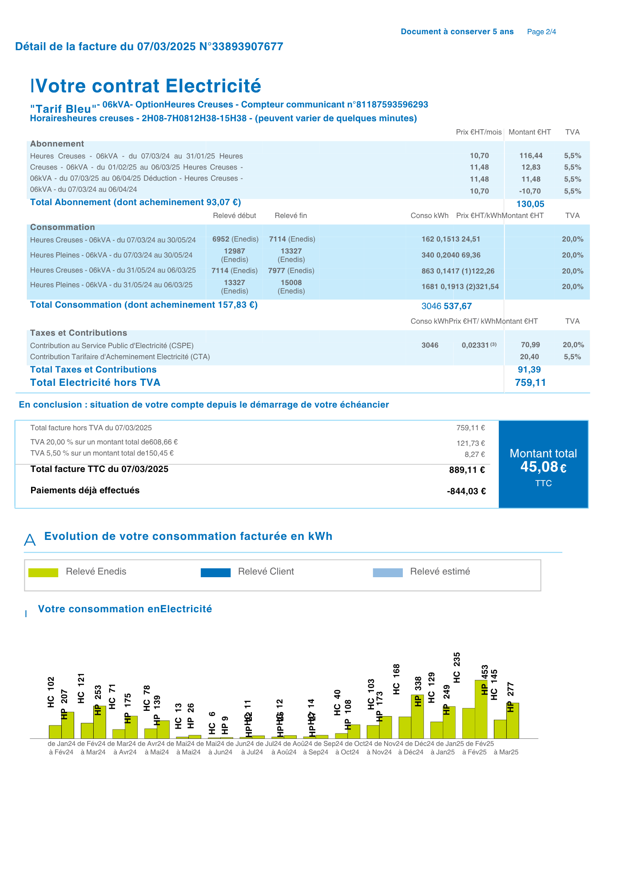

5
Abonnement :
Partie fixe de la facture, payée même sans consommation. Elle dépend de la puissance souscrite et de l’option tarifaire choisie.
Cette ligne inclut la part « acheminement » (TURPE), qui finance le transport et la distribution de l’électricité ainsi que l’entretien du réseau (Enedis).
À noter : depuis le 1er août 2025, le taux de TVA sur l’abonnement est passé de 5,5 % à 20 %.
6
Consommation :
Partie variable de la facture, calculée à partir des kilowattheures (kWh) consommés pendant la période de facturation.
Les relevés peuvent être réels ou estimés. En option Heures Pleines / Heures Creuses, la facture distingue les volumes consommés dans chaque période.
Une part d’acheminement proportionnelle à la consommation y est également incluse.
7
Prix hors taxes (HT) :
Le tarif de l’abonnement et celui du kWh sont indiqués hors TVA et hors autres taxes.
Ces montants comprennent déjà la part acheminement vers le gestionnaire de réseau.
8
TVA :
Jusqu’à 2025, deux taux s’appliquaient : 20 % sur la consommation et 5,5 % sur l’abonnement. Depuis le 1er août 2025, un taux unique de 20 % s’applique sur l’ensemble.
9
Taxes et contributions :
Ensemble des taxes appliquées à l’électricité, représentant environ un tiers du montant total.
• CTA : Contribution Tarifaire d’Acheminement, qui finance le régime de retraite des agents des industries électriques et gazières.
• Accise sur l’électricité : remplace la CSPE et finance les énergies renouvelables, la péréquation tarifaire et l’aide sociale à l’énergie.
• Taxes locales : appliquées par les collectivités, selon le lieu de consommation.
10
Montant total HT :
Addition des montants hors TVA : abonnement HT + consommation HT + taxes HT (CTA, accise sur l’électricité).
11
Total TTC :
Montant global à payer, intégrant les prix HT, la TVA et les différentes taxes. Ce total tient compte des éventuels acomptes ou régularisations.